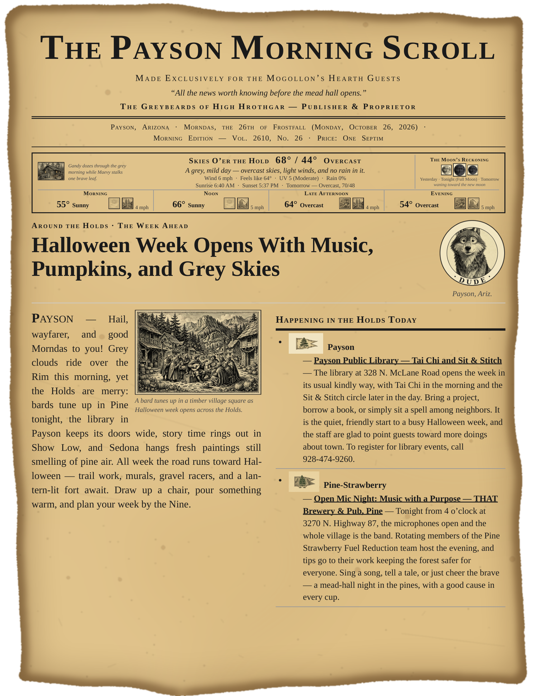
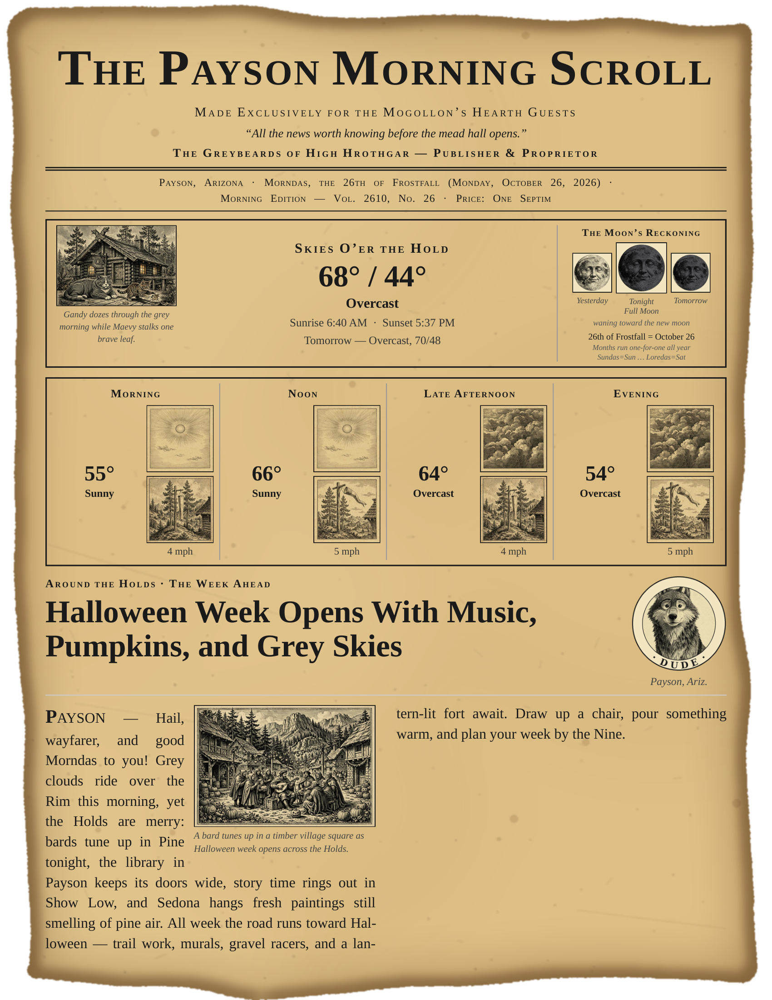

A mock-up, for marking. This is today's real page 1 (Monday, October 26, 2026) with one change: the weather area at the top is rebuilt at a quarter of its size.
Measured: the weather area — the cats box and the four by-the-hours boxes together — takes 30.6% of the page today. In this mock-up it takes 7.7% of the page — 25% of its current size.
Added inside the smaller weather area: a plain-words call on the day (“A grey, mild day — overcast skies, light winds, and no rain in it.”), the wind (6 mph), the feels-like high (64°), and the UV index (5, Moderate) — today's real numbers for Payson. The cats picture, the moon column, and all four by-the-hours boxes with their sky pictures, windsocks, and wind numbers are still there, smaller.
Two small-print lines no longer fit and were left out of the moon column: the Skyrim date line (the same date already stands in the dateline above the weather) and the calendar key lines (“Months run one-for-one all year” and the weekday-name key).
Nothing here is in production. The paper itself is not changed. This page stands only so the size can be seen and marked.

